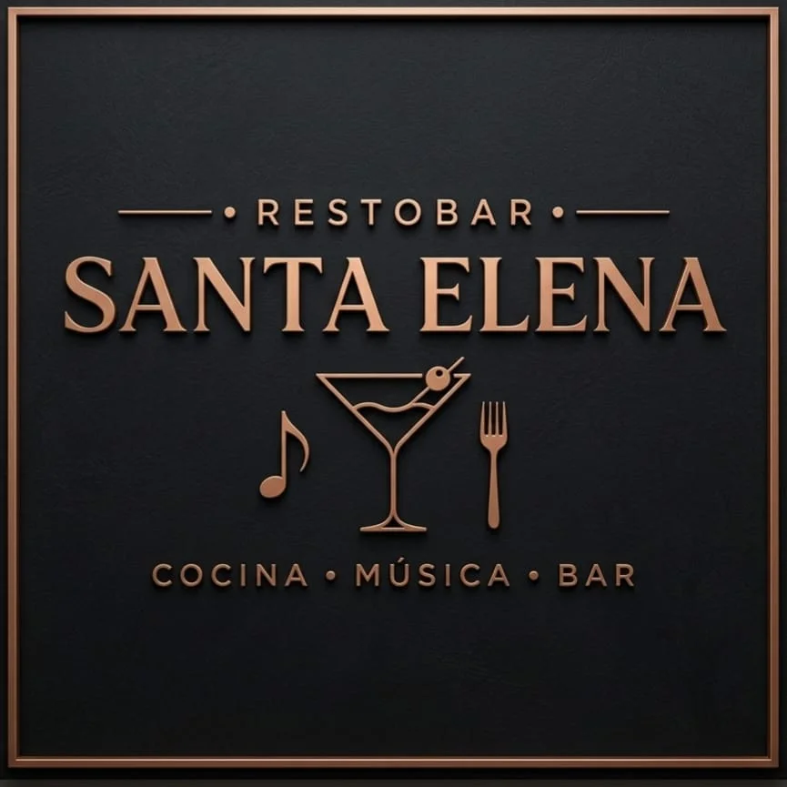
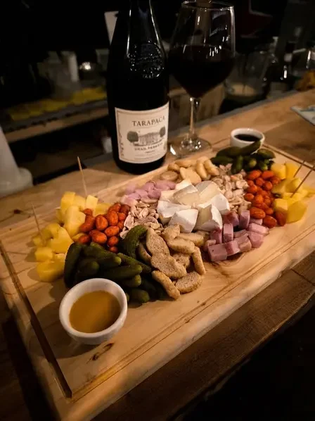
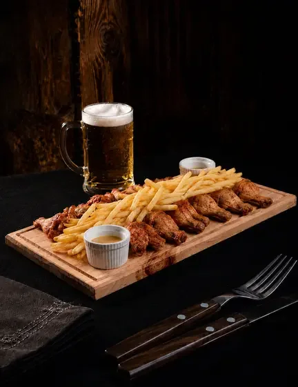
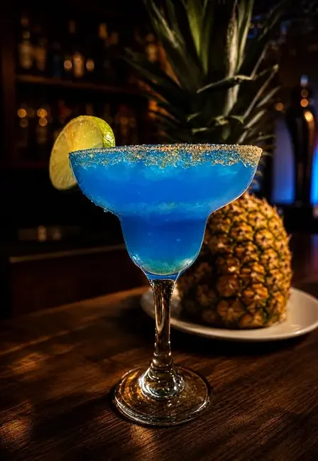

EL SABOR DE COMPARTIR
LA BUENA MESA
EMPIEZA AQUÍ.
Cocina, coctelería y música en Batuco.
Descubre tu próximo favorito.
BATUCO · LAMPACOCINA & BARRA

LA MESA ESTÁ SERVIDATabla La SegundaConoce sus ingredientes ↗
UNA SELECCIÓN PARA EMPEZAR
FAVORITOS DE LA CASA


SANTA ELENA RESTOBAR
COCINA.
COCTELERÍA.
BUENOS MOMENTOS.
Un punto de encuentro en Batuco para elegir algo rico y compartir la mesa. Explora los platos, las tablas y la barra a tu ritmo.
Cocina, coctelería y música: así se presenta Santa Elena en sus canales oficiales.
Conócenos en Instagram ↗AHORA EN BATUCO
HORA DE CHILE · AMERICA/SANTIAGOHorario de atención por confirmar
PLANIFICA TU VISITA
UN MOMENTO
PARA ENCONTRARNOS.
Horario por confirmar
Todavía no publicamos horarios de apertura y cierre. Escríbenos por WhatsApp y el equipo te confirma si abre hoy.
Ubicación compartida por el restaurante
NOS ENCONTRAMOS EN BATUCO